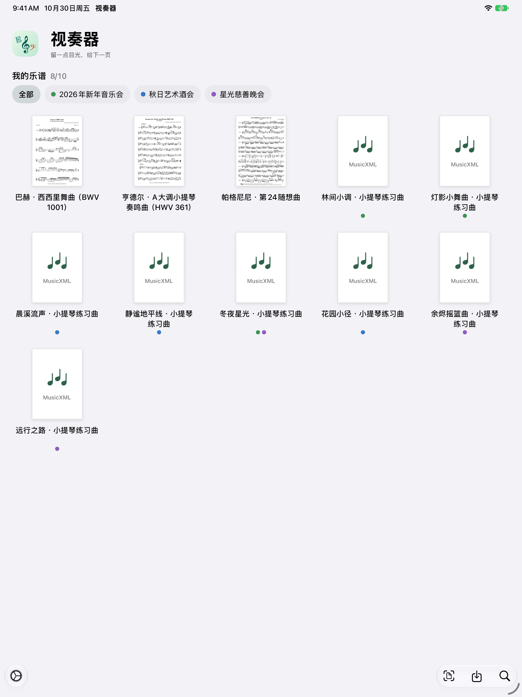
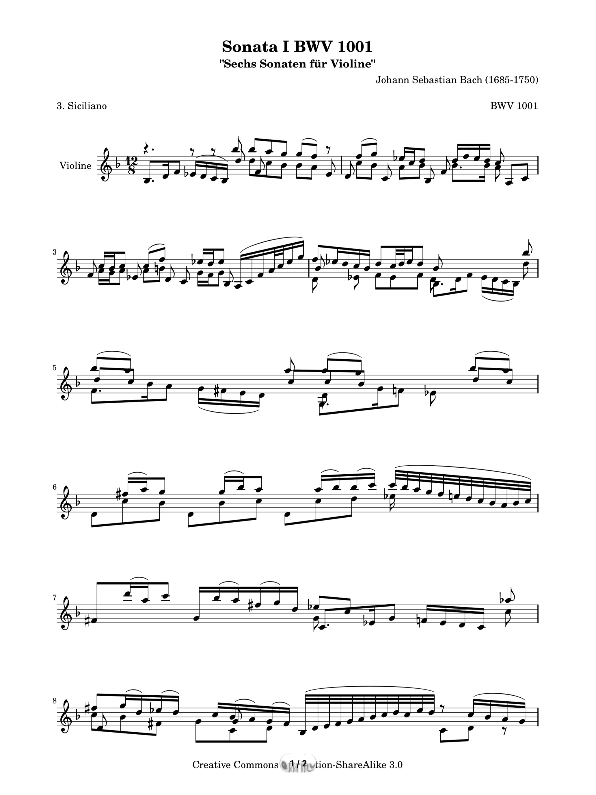
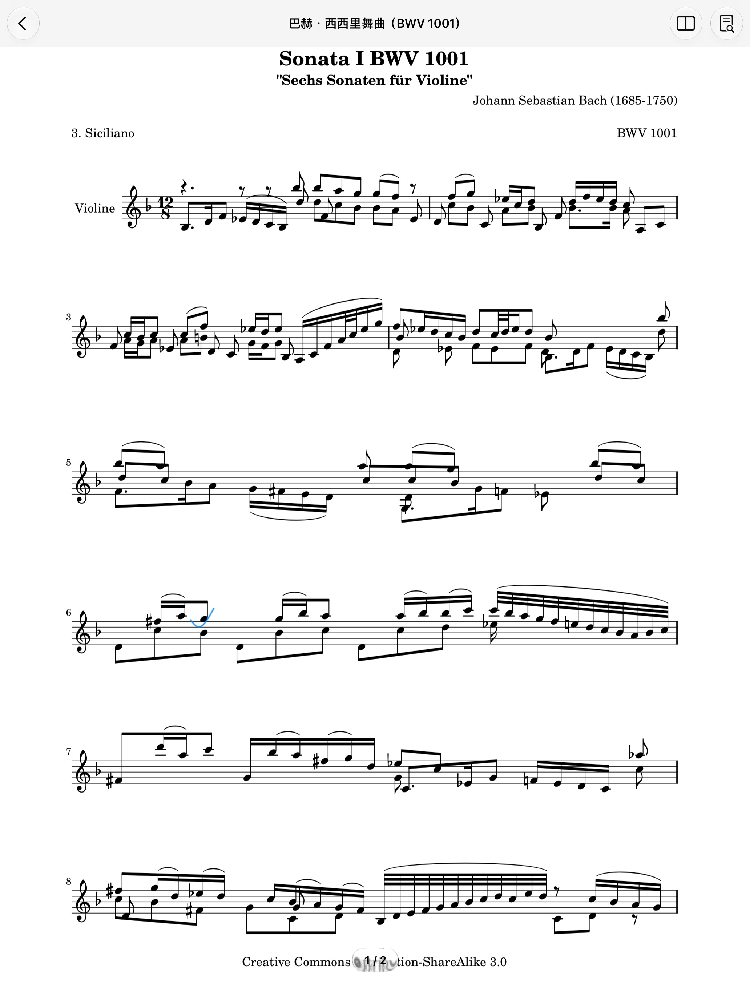
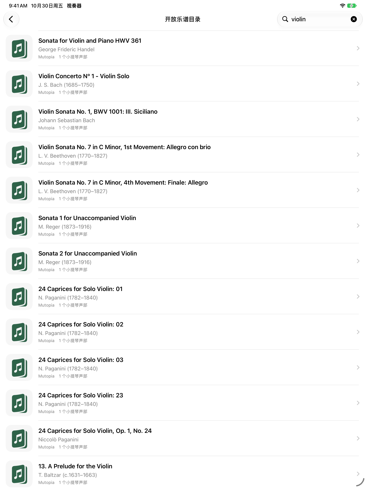

原谱，清楚地读。
免费版支持导入 PDF 或未压缩 MusicXML，也可扫描纸谱并保存为图像 PDF。PDF 保留原稿，支持缩放、平移和手动翻页；MusicXML 可调整音符大小与密度，按阅读视口换行分页。

为 iPad 上的排练而设计
读谱，为下一次排练做好准备；使用视奏器 Pro 添加排练标记。面向各类乐器，以乐团演奏为主要专业场景。
iPadOS 26.0+ · 简体中文 / English

为日常排练准备
从自己的分谱开始：阅读原始页面，调整结构化乐谱的布局，并使用视奏器 Pro 添加或编辑下一次排练需要的标记。
免费版支持导入 PDF 或未压缩 MusicXML，也可扫描纸谱并保存为图像 PDF。PDF 保留原稿，支持缩放、平移和手动翻页；MusicXML 可调整音符大小与密度，按阅读视口换行分页。

视奏器 Pro 支持使用 PencilKit 新增和编辑批注，原谱与笔迹保存在本机。免费版可查看已有批注，但不能新增或编辑。扫描可将纸谱保存为图像 PDF；扫描识别成可重排音符尚未提供。

视奏器 Pro 可在随包的 OpenScore / Mutopia 目录快照中本地搜索，查看声部、许可与署名后选择下载。当前目录以小提琴 PDF 为主。免费版仍可导入或扫描自己的乐谱，但不含曲谱目录搜索。

1.0 版本规划
基础读谱免费。视奏器 Pro 计划采用一次性应用内购买，以 US$4.99 作为全球参考价格；各地区实际价格以 App Store 上架后显示的当地货币价格为准。
导入 PDF 和未压缩 MusicXML、扫描为图像 PDF、读谱、只读查看已有批注、基础乐谱管理、阅读进度与备份。免费版最多可管理 10 份用户乐谱，内置示例不计入数量；已有超额乐谱不会被删除。
可新增和编辑 PencilKit 批注，并搜索随包曲谱目录。视奏器 Pro 的用户乐谱数量不受限制。自动翻谱及双 iPad 双页显示仍在规划中。无订阅；同一 Apple ID 可在第二台 iPad 恢复已购项目，无需重复购买。
视奏器 Pro 仍在准备中，尚未开放购买。自动跟随仅面向受支持的单声部 MusicXML；PDF 与扫描件使用手动翻页。自动跟随及双 iPad 功能尚未经真机验收，最终支持范围将在发布前确认。
需要帮助时
使用现有 WERD 公开支持邮箱。邮件由你主动发送；本页不会自动上传乐谱或诊断资料。
发送支持邮件ericdai2013@gmail.com
请说明 App 版本、iPad 型号、iPadOS 版本、文件格式及复现步骤。分享截图或谱例前，请移除姓名、未公开曲谱和其他不必要内容；不要发送网关令牌或 API 密钥。
当前支持 PDF、.xml / .musicxml，单文件须小于 50,000,000 字节；暂不支持压缩 .mxl。加密、无页面或无法解析的文件会拒绝。
可以继续本地阅读与手动翻页。相机用于主动眼动跟随或扫描，麦克风用于主动演奏跟随；你可以在 iPad 系统设置中管理授权。
清空回收站会从视奏器本机曲库中永久移除乐谱、批注和阅读进度。开启 iCloud 同步时，删除状态会发送至你的设备，但同步可能延迟。Apple 设备备份、Files、另一台 iPad 或邮件中的独立副本可能仍存在。详见隐私政策第8节。
SightReader（视奏器）尚未正式上架。此页为产品预览，暂无 App Store 下载入口。
隐私与数据
生效日期：2026年10月30日
本政策说明 iPad 版视奏器 1.0 的数据处理方式。
视奏器由 Zicong DAI 提供。生效日期：2026年10月30日。
如有隐私问题或请求，请发送邮件至 ericdai2013@gmail.com。邮件和附件仅用于处理你的请求；留存与删除安排见第9节。
导入 PDF 或未压缩 MusicXML 后，视奏器会把乐谱保存在 App 本机曲库，并保存用于查找、显示和续读的标题、本地标识、来源信息等。App 也会保存标签分配、批注、阅读进度、排版选择及扫描调整。阅读本机乐谱不需要视奏器账户。
扫描会把你确认的纸质页面保存为图像 PDF。设备端 Vision 文字识别可能读取首页文字并建议乐谱名称；它不会识别音符、把扫描件转换成结构化乐谱，也不会让扫描 PDF 支持自动跟随。
只有在你启动系统文稿扫描或真实眼动跟随时，App 才会使用相机。跟随过程中，相机画面与面部／视线估计在 iPad 本机处理，用于估算阅读位置。校准样本只留在运行内存，停止跟随后清除。只有在你主动开启真实跟随后，App 才会使用麦克风；短时音频输入会在本机分析为音高、置信度和时间信息。
视奏器不会向开发者录制或发送眼动视频、原始麦克风音频或校准样本。你停止跟随、离开阅读页或 App 进入后台后，跟随传感器会停止。拒绝相机或麦克风权限后，仍可在本机阅读并手动翻页；扫描或相应的跟随功能则不可用。
iCloud 同步默认关闭。你在设置中开启后，若已登录 iCloud，视奏器会通过 Apple CloudKit 私有数据库同步用户曲谱原文件、批注、排版与阅读信息，以及分配到各份曲谱的标签。App 自带参考谱不会作为用户曲谱重复上传。独立标签目录保存在本机；未分配标签定义不会单独同步。
你的 iCloud 服务提供者与适用条款取决于 Apple 账户所在国家或地区。中国大陆的 iCloud 由 GCBD（AIPO Cloud (Guizhou) Technology Co., Ltd.，云上贵州）运营，使用须遵循适用的 iCloud 服务条款和隐私政策。Apple 对 CloudKit 私有数据库的说明是：它关联到你的 iCloud 账户，默认不会与他人共享。第三方 App 可按适用的服务条款及各自的隐私政策，在 iCloud 中存储和处理数据。iCloud 数据计入你的账户存储配额。视奏器不运营独立的乐谱存储服务器。
关闭 iCloud 开关会停止本 App 后续同步，但不会删除已经上传到 iCloud 的数据。同步可能延迟或失败；两台设备发生冲突时，App 可能保留不同版本的曲谱副本，而不静默覆盖。删除数据前请检查各设备副本。
你主动创建或加入双 iPad 谱架并选择附近设备后，视奏器会发现附近的 App 实例，并与选中的另一台 iPad 交换会话信息。信息可能包括临时显示名称和会话标识、短配对码与临时密钥、曲谱指纹及格式／大小、页面和排版信息，以及翻页协调消息。两台 iPad 都须预先各自拥有同一份乐谱。
谱架会话不会在两台 iPad 之间传送曲谱原文件、标题、曲库、批注、原始音频或视频、音高数据或视线样本。连接会加密，并使用临时配对信息。停止或暂停会话后会断开连接并清除临时会话状态。
乐谱目录随 App 提供，搜索在本机完成。当前目录提供小提琴分谱；其他乐器可自行导入 PDF 或 MusicXML。你选择下载非随包目录 PDF 时，App 会直接向所列来源请求文件，例如 GitHub 原始文件服务或 Mutopia 网站。
下载请求会到达相应来源，可能暴露 IP 地址、请求的文件路径及普通网络请求信息。App 不会在目录下载请求中附带你的曲库、批注或传感器输入。来源网站自行管理服务器日志与留存；各目录来源的具体处理方式尚未全部核实。
在浏览器中打开来源或许可链接，会向目标网站发送普通浏览请求信息，并适用其自身的隐私及 Cookie 规则。乐谱版权许可说明内容如何使用，不说明服务器如何记录网络请求。
视奏器 Pro 计划采用非消耗型一次性 App 内购买，美区 App Store 价格基准为 US$4.99。其他地区的币种、税费与价格以 App Store 显示为准。App 使用 StoreKit 获取商品信息和本地化价格，在你主动购买时处理交易，并读取或恢复用于解锁 Pro 的交易权益。
Apple 处理 App Store 付款及相关 Apple 账户活动。视奏器不会要求你在 App 中填写银行卡信息，也不使用独立购买服务器或视奏器账户。Apple 按其自身政策处理交易记录。
删除乐谱会将它移入回收站。在你还原或确认清空回收站前，本机原谱、相关批注和阅读进度仍可恢复。若已开启 iCloud 同步，乐谱及其回收站状态也可能保留在 iCloud 私有数据库中，以便恢复。
确认清空回收站后，App 会从本机曲库永久移除乐谱及相关批注和阅读进度。App 会保留含曲谱标识与同步信息的本机删除记录，防止旧副本在后续同步中重新出现。开启 iCloud 同步后，删除状态会发送到你的设备，并可能在同步记录中保留删除标记。
删除标记记录了你的删除选择，帮助阻止旧乐谱副本在后续同步中重新传回。它不能保证清除你保存在其他设备、Apple 设备备份、Files 或邮件中的独立副本，也不代表服务商留存的记录会立即删除。关闭 iCloud 不会删除此前上传的数据。
当前视奏器没有手动备份或导出曲谱的界面。若你开启 Apple 设备备份，本机 App 数据可能依 Apple 备份流程及系统设置纳入备份。设备备份、Files 中的原文件、另一台 iPad、截图或邮件都是独立副本；删除 App 或清空回收站不一定会删除这些副本。
你向 ericdai2013@gmail.com 发送邮件时，Google Gmail 会处理邮件投递。开发者收取的邮箱地址、邮件正文及你主动提供的附件，仅用于处理你发起的支持或隐私请求。请求结案90天后，开发者会从支持邮箱删除相关邮件及附件；为处理争议或履行法律义务而有必要的情况除外。Gmail 回收站和服务商备份按服务商规则处理。
无需发送整个曲库。除非确有助于说明问题，请先移除未发布乐谱、个人信息和无关附件。你可以向 ericdai2013@gmail.com 请求查看、更正或删除开发者实际持有的支持信息。
SightReader 产品页面托管在 GitHub Pages 上。浏览器加载网页和图片时会向 GitHub 发送请求。此页面不含表单、广告或访问分析脚本；外观偏好保存在浏览器本地存储中，所选语言体现在网页 URL 中。
GitHub 按其隐私声明处理网站请求。点击邮件链接不会自动发送邮件，需由你决定是否发送。
你可以在曲库与回收站管理本机乐谱，通过 iCloud 开关控制可选同步，并在 iPad「设置」中管理相机或麦克风权限。对于开发者实际持有的信息，你可以通过上方邮箱提出查看、更正或删除请求。发给开发者的请求不能删除 Apple、乐谱来源网站、邮件服务商、设备备份或其他人员持有的数据。
本政策于2026年10月30日首次正式公开发布时生效。本页提供当前版本。